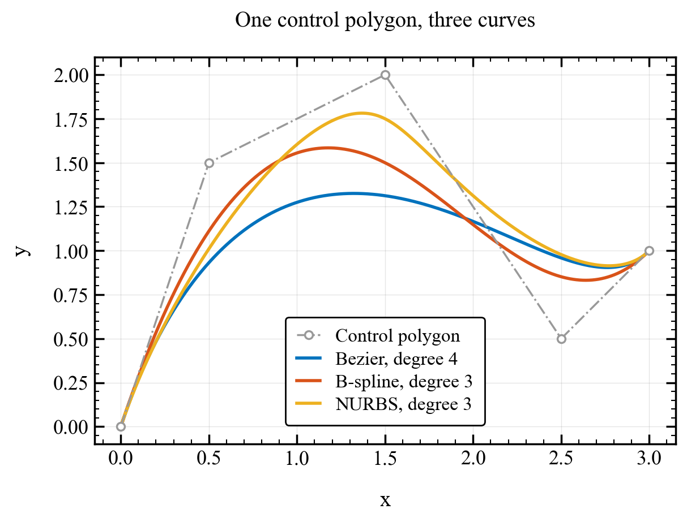

Bézier, B-spline, and NURBS curves#
One interface, different inputs#
For a curve in \(d\) dimensions with \(n+1\) control points, P has shape
(d, n+1). Each column is a control point. Use floating-point arrays for
both control points and weights.
Geometry |
Constructor arguments |
Degree and knots |
|---|---|---|
Polynomial Bézier |
|
Degree \(n\); one clamped span |
Rational Bézier |
|
Degree \(n\); one clamped span |
Polynomial B-spline |
|
Supplied degree and knot vector; unit weights |
NURBS |
|
Supplied degree, knot vector, and weights |
When a degree is supplied and knots are omitted, the constructor creates
a normalized clamped vector with evenly spaced interior knots. Explicit
knots, as used here, make the spans easy to inspect. len(U) must equal
P.shape[1] + p + 1.
Complete comparison script#
This script uses five shared control points. The Bézier has degree four; the B-spline and NURBS have degree three, with a knot at \(u=0.5\). The NURBS increases the middle control point’s weight from one to three.
Run python demos/documentation/curve_comparison.py, or
download the script.
"""Compare Bezier, B-spline, and NURBS inputs on one control polygon."""
import numpy as np
import matplotlib.pyplot as plt
import nurbspy as nrb
nrb.set_plot_options()
# Shape (2, 5): x coordinates in row zero, y coordinates in row one.
P = np.array([[0., 0.5, 1.5, 2.5, 3.],
[0., 1.5, 2.0, 0.5, 1.]])
p = 3
U = np.array([0., 0., 0., 0., 0.5, 1., 1., 1., 1.])
W = np.array([1., 1., 3., 1., 1.])
curves = {
"Bezier": nrb.NurbsCurve(control_points=P),
"B-spline": nrb.NurbsCurve(control_points=P, degree=p, knots=U),
"NURBS": nrb.NurbsCurve(control_points=P, weights=W, degree=p, knots=U),
}
u = np.linspace(0., 1., 301)
fig, ax = plt.subplots(figsize=(7, 4.5), layout="constrained")
curves["Bezier"].plot_control_points(fig, ax, color="0.6")
ax.lines[-1].set_label("Control polygon")
for (label, curve), color in zip(curves.items(), nrb.COLORS_MATLAB):
C = curve.get_value(u)
curve.plot_curve(fig, ax, color=color, linewidth=2)
ax.lines[-1].set_label(f"{label}, degree {curve.p}")
midpoint = curve.get_value(0.5)[:, 0]
print(f"{label}: degree={curve.p}, C shape={C.shape}, C(0.5)={midpoint.round(6)}")
ax.set(xlabel="x", ylabel="y", title="One control polygon, three curves")
ax.set_aspect("equal", adjustable="box")
ax.grid(alpha=0.2)
ax.legend()
plt.show()
Output and interpretation#
Each evaluation returns C.shape == (2, 301), with coordinates in rows
and parameter samples in columns. At \(u=0.5\):
Curve |
Degree |
Position |
|---|---|---|
Bézier |
4 |
\((1.5,\ 1.3125)\) |
B-spline |
3 |
\((1.5,\ 1.5)\) |
NURBS |
3 |
\((1.5,\ 1.75)\) |

Degrees and weights change the shape while clamping preserves the endpoints.#
The Bézier uses all five Bernstein basis functions over one span. The cubic B-spline has two spans and local basis support. The NURBS uses those same cubic bases, but the larger central weight pulls it toward the central control point. Equal weights recover the B-spline.
For derivatives use curve.get_derivative(u, order=1); it returns the same
coordinate/sample layout. curve.get_curvature(u) returns one curvature
magnitude per sample. The parameter u is generally neither arc length
nor a Cartesian coordinate.
The next example shows why rational weights are useful for circles.